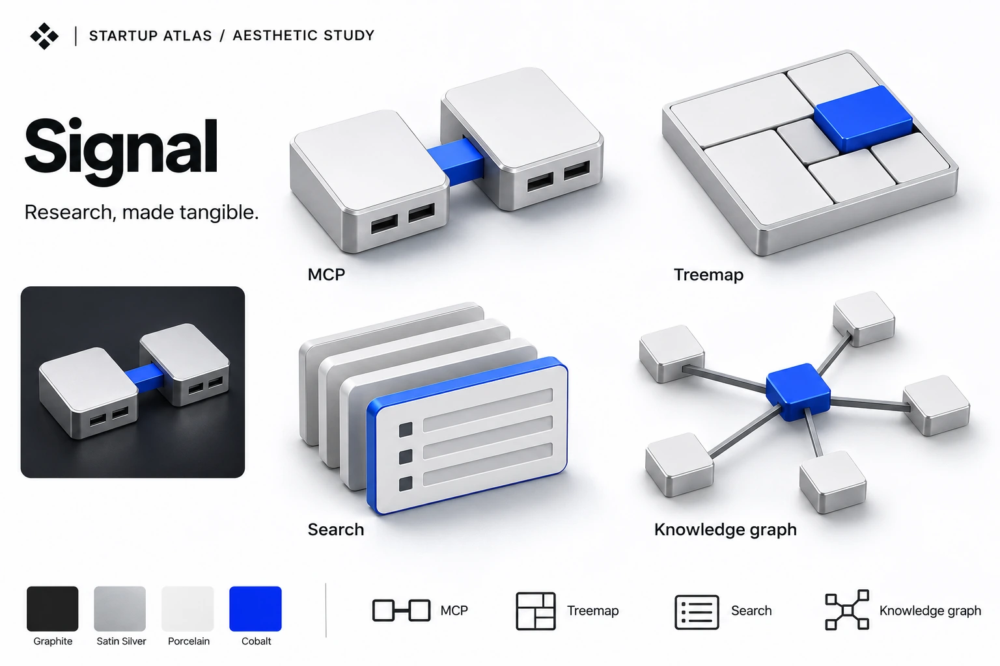

Typography
Aa↗Geist Sans
A complete name.
A clear next step.
Geist Mono
entity:atlas / 24.0Sans for reading and action. Mono for identifiers and measurements.
A new direction for Startup Atlas
Precise interfaces. Distinctive feature graphics. One visual language for finding companies and following connections.
Proposed aesthetic The next visual chapter of Atlas.

Navigation → feature → workspace
Choose a feature, then switch between its navigation and header treatments. The same forms hold together in light and dark.
Junction
Knowledge graph selected. Feature menu in light appearance.
Illustrative feature art · Working-view links open the current Atlas.
The first feature family
Satin metal, porcelain faces and graphite recesses. One cobalt component brings the important part into focus. Each operation has its own silhouette, framed on porcelain white in either theme.
16–48px · controls and compact navigation
80–120px · menu previews and feature entries
240–480px · a clear subject with room to breathe
Core aesthetic
The artwork supplies character. Type, spacing and surfaces keep the interface clear. These proposed foundations are isolated to this exploration.
Typography
Aa↗A complete name.
A clear next step.
entity:atlas / 24.0Sans for reading and action. Mono for identifiers and measurements.
Colour roles
Selection and keyboard focus remain visible through shape and position as well as colour.
Edges & surfaces
Fine keylines. Controlled corners. A deliberate lift for the active layer.
A smaller expression
Editable, background-free SVG symbols preserve each feature’s structure at navigation size.
Material & form
The direction board fixes the family’s camera, light, material and silhouette. New assets begin with these shared decisions.

A repeatable language
Keep the material, camera and light fixed. Change the feature’s structure. Review its silhouette at small size, then use the same form in its header.
Download the design kit Read the full production guideReferences & interpretation
Feature recognition from Granola. A coherent graphic world from Clay. Interface precision from Geist.